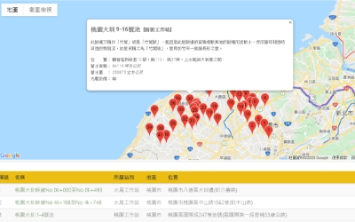

:::


示範應用
桃園農田水利會
前瞻計畫
桃園農田水利會的池塘管理與展示平台，是由桃園水利會以便民、節水等目的，所委託開發的整合平台。平台除了有網頁的型之外，也有使用LineBot，方便會內會外的使用者於工作、巡檢、查詢及預警用。
桃園農田水利會
池塘管理與展示
桃園農田水利會的池塘管理與展示平台，是由桃園水利會以便民、節水等目的，所委託開發的整合平台。平台除了有網頁的型之外，也有使用LineBot，方便會內會外的使用者於工作、巡檢、查詢及預警用。
經濟部水利署
防災資訊服務網
桃園農田水利會的池塘管理與展示平台，是由桃園水利會以便民、節水等目的，所委託開發的整合平台。平台除了有網頁的型之外，也有使用LineBot，方便會內會外的使用者於工作、巡檢、查詢及預警用。
桃園市水務局
桃園市水情資訊網
桃園農田水利會的池塘管理與展示平台，是由桃園水利會以便民、節水等目的，所委託開發的整合平台。平台除了有網頁的型之外，也有使用LineBot，方便會內會外的使用者於工作、巡檢、查詢及預警用。